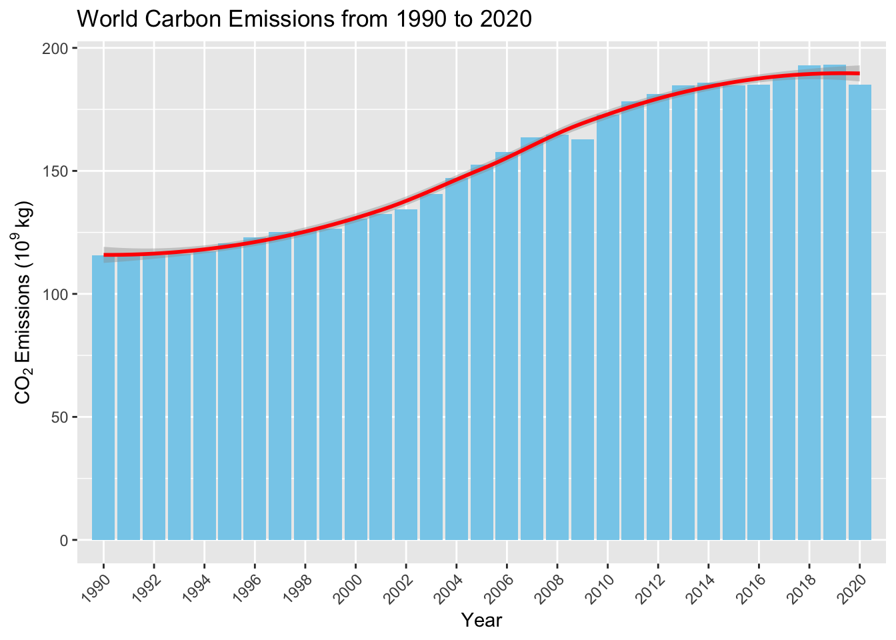
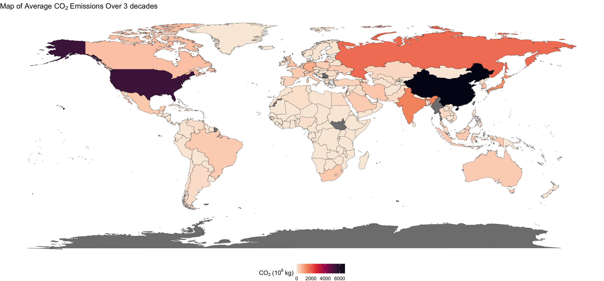
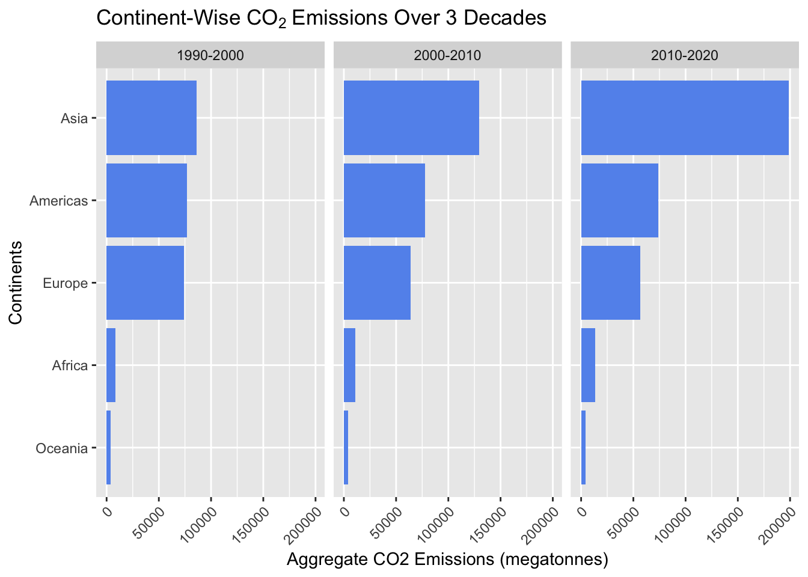
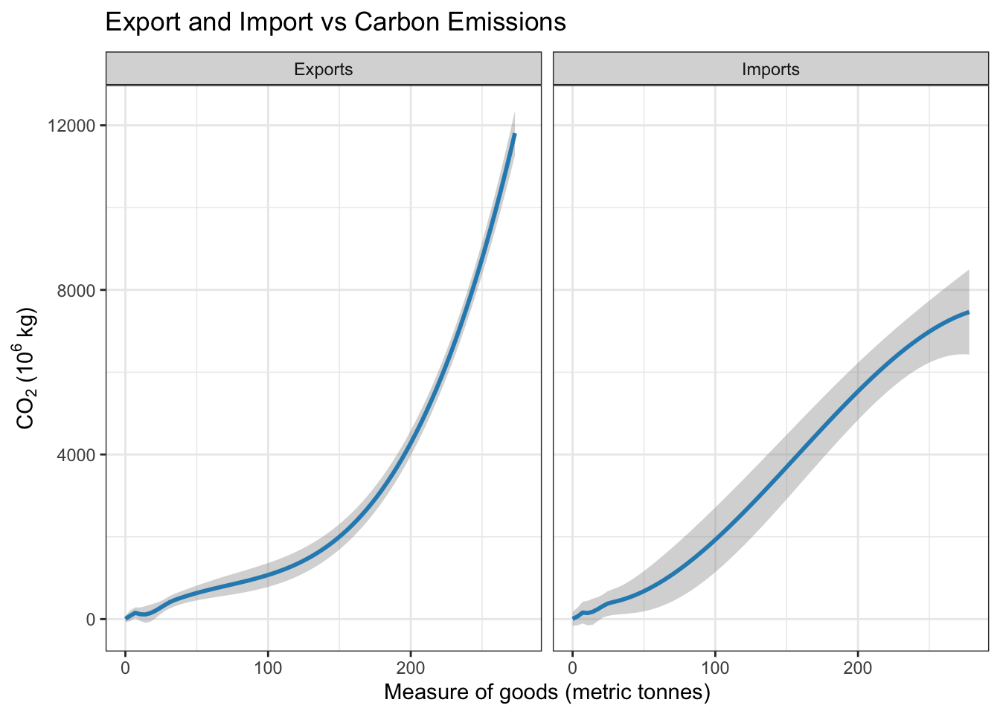
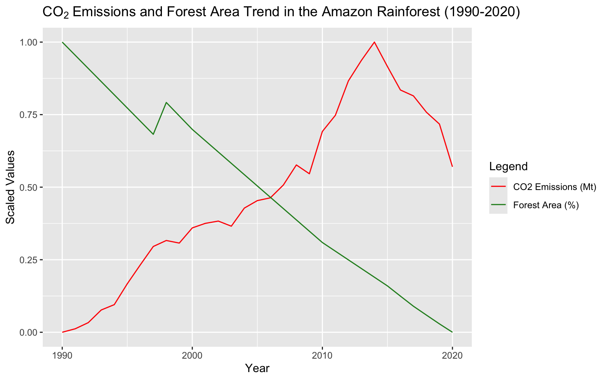
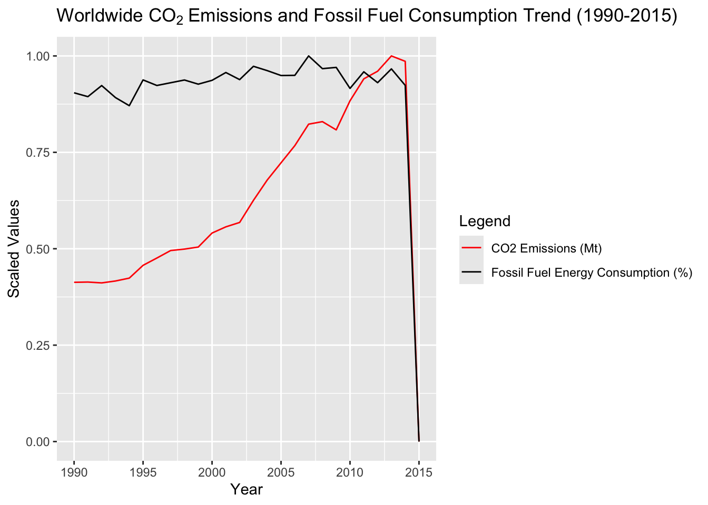
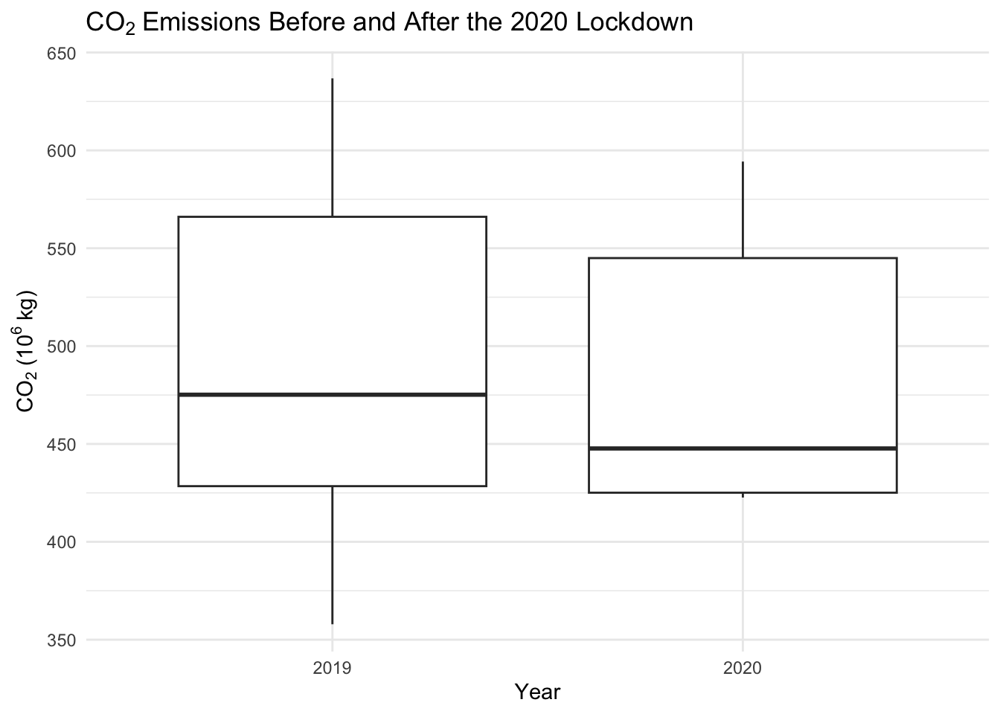
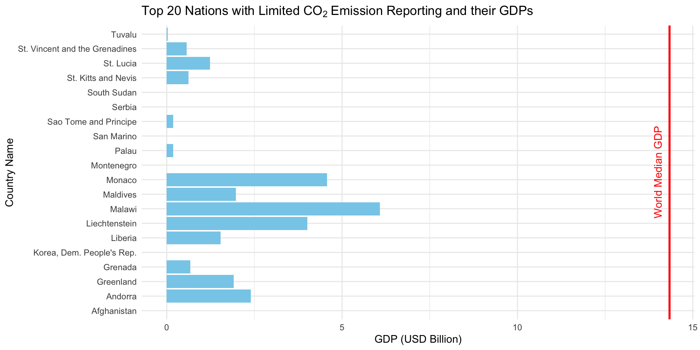

Code
library(countrycode)
library(dplyr)
library(ggplot2)
library(forcats)
library(redav)
library(tidyverse)
library(ggridges)
library(maps)
library(dplyr)
library(rworldmap)
emissions_df = read.csv("emission_analysis.csv")library(countrycode)
library(dplyr)
library(ggplot2)
library(forcats)
library(redav)
library(tidyverse)
library(ggridges)
library(maps)
library(dplyr)
library(rworldmap)
emissions_df = read.csv("emission_analysis.csv")emissions_ts <- emissions_df |>
select(Year, CO2_Emissions) |>
group_by(Year) |>
summarize(Avg = mean(CO2_Emissions, na.rm = TRUE))
ggplot(emissions_ts, aes(x = Year, y = Avg)) +
geom_bar(stat = "identity", fill = "skyblue") +
geom_smooth(aes(y = Avg), color = "red", size = 1) +
labs(
title = "World Carbon Emissions from 1990 to 2020",
x = "Year",
y = expression("CO"[2] ~ "Emissions (10"^ 9~ "kg)")) +
scale_x_discrete(limits = seq(1990, 2020, by=2)) +
theme(axis.text.x = element_text(angle = 45, hjust = 1))
This time series graph clearly depicts the increase of carbon emissions globally from 1990 to 2020. The graph corroborates the well-established trend of increasing CO2 emissions over the past three decades. There are many factors that contribute to the rise in C02 emissions like deforestation, burning of fossil fuels, or supply chain emissions, which are further investigated in this analysis.
There is sharper increase of C02 emissions between 2003 to 2013. This could be due to the rapid industrialization and economic growth in developing nations, particularly China and India, which led to increased energy consumption. These significant investments in infrastructure, manufacturing, and urbanization in emerging economies increased the demand for energy, much of which was sourced from fossil fuels.
A notable exception to this trend occurred in 2020, when global CO2 emissions decreased by approximately 5% due to widespread lockdowns and economic slowdowns caused by the COVID-19 pandemic.
emissions_df_g1 <- emissions_df
# For this purpose, we are filling all missing CO2 emission values with 0
emissions_df_g1$CO2_Emissions[is.na(emissions_df_g1$CO2_Emissions)] <- 0
# Obtaining Continents
emissions_df_g1$Continent <- countrycode(sourcevar = emissions_df_g1[, "Country.Code"],
origin = "iso3c",
destination = "continent")
# Adding decade ranges and aggregating CO2 emissions
emissions_df_g1 <- emissions_df_g1 |>
mutate(
Year_Range = case_when(
Year >= 1990 & Year <= 2000 ~ "1990-2000",
Year >= 2000 & Year <= 2010 ~ "2000-2010",
Year >= 2010 & Year <= 2020 ~ "2010-2020")) |>
group_by(Continent, Year_Range) |>
summarise(Aggregate_CO2 = sum(CO2_Emissions)) |>
ungroup()
ggplot(emissions_df_g1, aes(x = Aggregate_CO2, y = fct_reorder(Continent, Aggregate_CO2))) +
geom_col(fill = "cornflowerblue") +
facet_wrap(~Year_Range) +
labs(title = expression("Continent-Wise CO"[2] ~ "Emissions Over 3 Decades"), x = "Aggregate CO2 Emissions (megatonnes)", y = "Continents") +
theme(axis.text.x = element_text(angle = 45, hjust = 1))
From the graph above we can study the amount and distribution of CO2 emissions over 3 decades across different continents. In all facets, we observe the same order of CO2 emission amounts with Asia having the highest amount due to the continent have the most number of countries, and Oceania (Australia and New Zealand) having the least amount. The amount of CO2 emissions in Asia steadily increased each decade and reached an alarming 200k megatonnes, which indicates that Asia plays a huge role in pollution. However, the amount of CO2 emissions in Europe decreased over each decade, having its highest emissions in 1990-2000. This shows a slow down in CO2 emission activity in this continent. The amount of CO2 emissions in Africa slightly increased each decade, while they remained almost the same in the Americas and Oceania from 1990-2020.
country_co2 <- emissions_df |> select(Country.Code, CO2_Emissions) |> group_by(Country.Code) |> summarize(mean_emissions = mean(CO2_Emissions))
world_map <- map_data("world")
country_co2$name <- countrycode(country_co2$Country.Code, "iso3c", "country.name")
# The world map data contains only country names and not the country codes. The below manual alteration of country names is required to match the countries onto the world map.
country_co2 <- country_co2 %>%
mutate(name = ifelse(name == "United States", "USA", name))
country_co2 <- country_co2 %>%
mutate(name = ifelse(name == "United Kingdom", "UK", name))
country_co2 <- country_co2 |>
mutate(name = ifelse(name == "Congo - Kinshasa", "Democratic Republic of the Congo", name))
country_co2 <- country_co2 |>
mutate(name = ifelse(name == "Congo - Brazzaville", "Republic of Congo", name))
country_co2 <- country_co2 |>
mutate(name = ifelse(name == "Côte d’Ivoire", "Ivory Coast", name))
country_co2 <- country_co2 |>
mutate(name = ifelse(name == "Czechia", "Czech Republic", name))
country_co2 <- country_co2 |>
mutate(name = ifelse(name == "Bosnia & Herzegovina", "Bosnia and Herzegovina", name))
country_co2 <- country_co2 |>
mutate(name = ifelse(name == "Eswatini", "Swaziland", name))
world_co2 <- full_join(world_map, country_co2, by = c("region" = "name") )
ggplot(world_co2, aes(x = long, y = lat, group = group, fill = mean_emissions)) +
geom_polygon(color = "black", size = 0.1) +
scale_fill_viridis_c( option="rocket", na.value = "grey50", name = "CO"[2] ~ "(10"^ 6~ "kg)", direction = -1) +
labs(title = "Map of Average CO"[2] ~ "Emissions Over 3 decades") +
theme_void() +
theme(legend.position = "bottom")
The above world map is a visual representation of the average CO2 Emissions from 1990 to 2020. The perceptual color gradient indicates the relative increase in emissions across different regions. Countries with darker colors or shades have higher carbon emissions than countries colored in lighter shades. Some countries are unaccounted as they do not measure or report their carbon emissions data to the United Nations and they are depicted in grey color.
It can be observed that China is the leading nation of carbon emissions followed by the US. China has been a global manufacturing powerhouse in the past few decades, which is the reason it consumes vast amounts of energy. The US has a long history of industrialization and energy-intensive lifestyles, resulting to its significant cumulative emissions.
It’s worth noting that Antarctica, depicted in gray, accurately reflects the absence of significant human activity and, consequently, negligible carbon emissions. As carbon emissions are primarily a result of human activities, regions with minimal human population, such as Antarctica, have minimal impact on global emissions.
emissions_df_g2 <- emissions_df
emissions_df_g2[is.na(emissions_df)] <- 0
draw_biplot(emissions_df_g2, points = FALSE) +
labs(title = "Biplot of CO"[2] ~ "Emissions Data")Using the biplot above we can analyze the relationship of different features that contribute to CO2 emissions. We can observe that Imports, Exports and GDP are highly correlated to the amount of CO2 emissions, while Fossil Fuel Consumption shows a positive correlation. Livestock Production is almost at a 90 degrees angle to the CO2 emissions vector and therefore we can say that there is no correlation between the two. Features such as Air Pollution and Renewable Energy have a negative correlation. Air pollution having a negative correlation could be due to the fact that air pollutants are made up of more than just CO2, air pollutants also include sulphur dioxide, nitrous oxide, carbon monoxide, etc, which have significantly reduced over the years.
emissions_ie <- emissions_df |>
filter(Year == 2020) |>
select(Imports, Exports, CO2_Emissions) |>
drop_na()
emissions_ie <- pivot_longer(emissions_ie, cols=c(Imports, Exports), names_to="Trade", values_to="Measure")
emissions_ie["Measure"] <- round(emissions_ie["Measure"] / 10^10)
ggplot(emissions_ie) +
geom_smooth(aes(x = Measure, y = CO2_Emissions), color= "#2b8cbe") +
facet_wrap(~Trade) +
labs(title = expression("Export and Import vs Carbon Emissions"), x = "Measure of goods (metric tonnes)", y = "CO"[2] ~ "(10"^ 6~ "kg)") +
theme_bw()`geom_smooth()` using method = 'loess' and formula = 'y ~ x'
This graph compares the relationship between the volume of goods and carbon emissions for exports and imports worldwide. Both panels exhibit a strong positive correlation between the amount of goods exported/imported and CO2 emissions. This means as the volume of goods increases, carbon emissions also rise. However, the trend is non-linear, suggesting that the rate of increase in CO₂ emissions accelerates as the volume of goods grows.
Exports show a more exponential growth in emissions at higher levels. This is possibly due to energy-intensive production or transportation processes for the exporting of goods. The increase in emissions with imports is steadier and slightly less steep compared to exports. This suggests that importing may involve less direct emission-intensive activities, likely because the carbon cost of production occurs elsewhere. In both panels, the confidence intervals (the shaded regions around the trend lines) are narrow at lower volumes and widen slightly at higher volumes, indicating higher variability in emissions for larger trade activities.
# Countries in the Amazon Rainforest: Brazil, Peru, Bolivia, Ecuador, Colombia, Venezuela, French Guiana, Guyana, Suriname
# Source: https://www.nature.org/en-us/get-involved/how-to-help/places-we-protect/amazon-rainforest/
amazon_countries <- c("BRA", "PER", "BOL", "ECU", "COL", "VEN", "GUF", "GUY", "SUR")
emissions_df_amazon <- emissions_df|>
filter(Country.Code %in% amazon_countries)
# We do not have data for French Guiana so we will go ahead and account for the rest of the 8 countries in the Amazon Rainforest
# The filtered dataset does not have missing values for Forest Area and CO2 Emissions
# aggregating CO2 emissions and Forest Area by Year
aggregated_data <- emissions_df_amazon |>
group_by(Year) |>
summarize(
Total_CO2 = sum(CO2_Emissions),
Total_Forest_Area = sum(Forest_Area)
)
# Scaling the data
aggregated_data <- aggregated_data |>
mutate(
Scaled_CO2 = (Total_CO2 - min(Total_CO2)) / (max(Total_CO2) - min(Total_CO2)),
Scaled_Forest_Area = (Total_Forest_Area - min(Total_Forest_Area)) / (max(Total_Forest_Area) - min(Total_Forest_Area))
)
ggplot(aggregated_data, aes(x = Year)) +
geom_line(aes(y = Scaled_CO2, color = "CO2 Emissions (Mt)")) +
geom_line(aes(y = Scaled_Forest_Area, color = "Forest Area (%)")) +
scale_color_manual(values = c("CO2 Emissions (Mt)" = "red", "Forest Area (%)" = "#228B22")) +
labs(
title = "CO"[2] ~ "Emissions and Forest Area Trend in the Amazon Rainforest (1990-2020)",
x = "Year",
y = "Scaled Values",
color = "Legend"
) +
theme(legend.position = "right")
Through this graph we wanted to investigate how the Amazon Rainforest has been impacted by deforestation and other human activities, and if this has impacted the CO2 emissions in the rainforest. Using the visualization above, we notice a clear trend of forest area dramatically reducing and CO2 emissions steadily increasing (with the exception of years 2015-2020). This confirms the fact that the depletion of the Amazon rainforest, one of the largest carbon sinks in the world has caused an increase in CO2 emissions, with the highest emissions being released in 2014.
The effect of livestock production on CO2 emissions is currently being studied and debated. We have investigated this topic using the graph below Source: https://sentientmedia.org/how-does-livestock-affect-climate-change/
# Aggregating CO2 Emissions and Livestock Production by Country
emissions_df_livestock <- emissions_df |>
group_by(Country.Name) |>
summarize(
Total_CO2 = sum(CO2_Emissions),
Total_Livestock = sum(Livestock_Production)
)
emissions_df_livestock <- na.omit(emissions_df_livestock)
# Obtaining the top 3 and bottom 3 countries in accordance with livestock production
sorted_emissions <- emissions_df_livestock |>
arrange(desc(Total_Livestock))
top_3_countries <- sorted_emissions |>
slice_head(n = 3)
bottom_3_countries <- sorted_emissions |>
slice_tail(n = 3)
combined_df <- bind_rows(top_3_countries |> mutate(Group = "Countries with Highest Production"),
bottom_3_countries |> mutate(Group = "Countries with Lowest Production"))
ggplot(combined_df, aes(x = Total_Livestock, y = Total_CO2, color = Group)) +
geom_point(size = 3) +
geom_text(aes(label = Country.Name), vjust = -1, size = 3, show.legend = FALSE) +
scale_color_manual(values = c("Countries with Highest Production" = "darkgreen", "Countries with Lowest Production" = "darkorange")) +
labs(
title = "CO"[2] ~ "Emissions over Countries with Lowest and Highest Livestock Production",
x = "Total Livestock Production",
y = "Total CO2 Emissions (Mt)",
color = "Group"
) +
theme(legend.position = "bottom")We have visualized the emissions of the countries with lowest and highest livestock production and observe that there is no clear relationship between CO2 emissions and livestock production. Countries with the highest livestock production (St. Kitts and Nevis & Antigua and Barbuda) have the lowest emissions. Countries with the lowest livestock production have higher emissions. Kuwait which has livestock production on the lower end is observed to have the highest emissions. The absence of a clear correlation could be because livestock production activities mainly release a substantial amount of methane as a pollutant as compared to CO2.
emissions_df_fuel <- emissions_df
emissions_df_fuel <- emissions_df_fuel[complete.cases(emissions_df_fuel[c("CO2_Emissions", "Fossil_Fuel_Energy")]), ]
aggregated_data <- emissions_df_fuel |>
group_by(Year) |>
summarize(
Total_CO2 = sum(CO2_Emissions),
Total_Fuel = sum(Fossil_Fuel_Energy)
)
aggregated_data <- aggregated_data |>
mutate(
Scaled_CO2 = (Total_CO2 - min(Total_CO2)) / (max(Total_CO2) - min(Total_CO2)),
Scaled_Fuel = (Total_Fuel - min(Total_Fuel)) / (max(Total_Fuel) - min(Total_Fuel))
)
ggplot(aggregated_data, aes(x = Year)) +
geom_line(aes(y = Scaled_CO2, color = "CO2 Emissions (Mt)")) +
geom_line(aes(y = Scaled_Fuel, color = "Fossil Fuel Energy Consumption (%)")) +
scale_color_manual(values = c("CO2 Emissions (Mt)" = "red", "Fossil Fuel Energy Consumption (%)" = "black")) +
labs(
title = "Worldwide CO"[2] ~ "Emissions and Fossil Fuel Consumption Trend (1990-2015)",
x = "Year",
y = "Scaled Values",
color = "Legend"
) +
theme(legend.position = "right")
The values for 2016-2020 are missing for fossil fuel consumption, hence this analysis is done for the years 1990-2015. From the graph above, we can see the fossil fuel consumption remains almost constant throughout the years (on the higher end) and the CO2 emissions steadily increase reflecting the rising global energy demand. Fossil fuels remain as the primary source of energy from 1990 to present and have contributed to increase in global CO2 emissions. The drop in values in 2015 is due to scaling and represents that both CO2 emissions and fossil fuel consumption were the lowest in this year.
emissions_covid <- emissions_df |>
filter(Year == c(2019, 2020)) |>
select(Year, CO2_Emissions) |>
arrange(desc(CO2_Emissions))
emissions_covid$Year <- factor(emissions_covid$Year)
emissions_covid <- emissions_covid[3:13, ]
ggplot(emissions_covid, aes(x = Year, y = CO2_Emissions)) +
geom_boxplot() +
labs(
title = "CO"[2] ~ "Emissions Before and After the 2020 Lockdown",
x = "Year",
y = "CO"[2] ~ "(10"^ 6~ "kg)") +
theme_minimal()
The graph provides a visual comparison of CO2 emissions before and during the 2020 lockdown. It utilizes box plots to represent the distribution of emissions data for each year. The median CO2 emissions in 2019 were higher than those in 2020. This indicates that CO2 emissions were lower during the lockdown year on average. The box plots show the range and variability of CO2 emissions within 2019 is wider, meaning there was a larger spread of emissions compared to 2020. The graph suggests that the 2020 lockdown had a noticeable impact on CO2 emissions. The decrease in median emissions and the reduced variability in 2020 reflects the global reduction in economic activity and energy consumption during that period.
column_list = c("Air_Pollution","Exports","Forest_Area","Fossil_Fuel_Energy","GDP","Imports","Livestock_Production","Renewable_Energy","CO2_Emissions")
missing_data <- emissions_df |>
mutate(HasMissing = is.na(across(column_list)) > 0) |>
select(Country.Name, HasMissing) |>
group_by(Country.Name) |>
summarise(Count = sum(HasMissing == TRUE)) |>
arrange(desc(Count)) |>
slice_head(n = 20)
country_with_missing_data <- missing_data$Country.Name
missing_GDP <- emissions_df |> filter(Country.Name %in% country_with_missing_data) |> group_by(Country.Name) |>
summarize(avg_GDP = mean(GDP) / 10^9)
missing_GDP[is.na(missing_GDP)] <- 0
mean_GDP = median(emissions_df$GDP, na.rm = TRUE) / 10^9
ggplot(missing_GDP, aes(x = avg_GDP, y = Country.Name)) +
geom_bar(stat = "identity", fill = "skyblue") +
labs(title = "Top 20 Nations with Limited CO"[2] ~ "Emission Reporting and their GDPs", x = "GDP (USD Billion)", y = "Country Name") +
geom_vline(xintercept = mean_GDP, color = "red", linetype = "solid", size = 1) +
annotate("text", x=mean_GDP, y = 1, color = "red", label="World Median GDP", angle = 90, vjust = -1, hjust = -1) +
theme_minimal()
The graph depicts the top 20 countries that failed to report their carbon emissions data to the United Nations, either in the past or are continuing to do so. The data for carbon emissions and some of the other fields like air pollution, exports, forest area, fossil fuel energy, GDP, imports are missing for these countries. Notably, these nations exhibit GDPs well under the global median, suggesting limited economic development and industrialization. This economic constraint may hinder their capacity to implement robust data collection and reporting systems. Several small island nations are included in this list, which typically have limited industrial capacity and rely heavily on imported goods, further contributing to their lower GDPs and potentially lower carbon footprints. The lack of consistent data reporting to the UN makes it difficult to accurately assess these countries’ true carbon footprints. Overall, the graph highlights the need for improved data transparency and international cooperation to address climate change, particularly in countries with limited reporting capabilities.